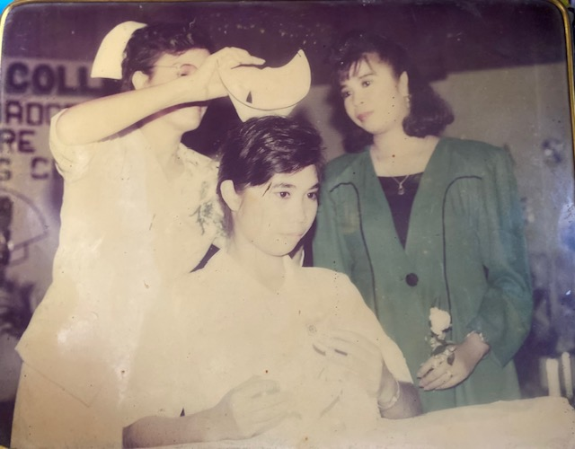
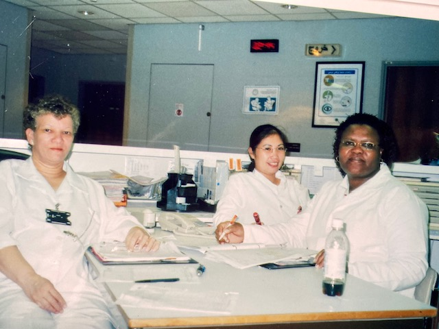
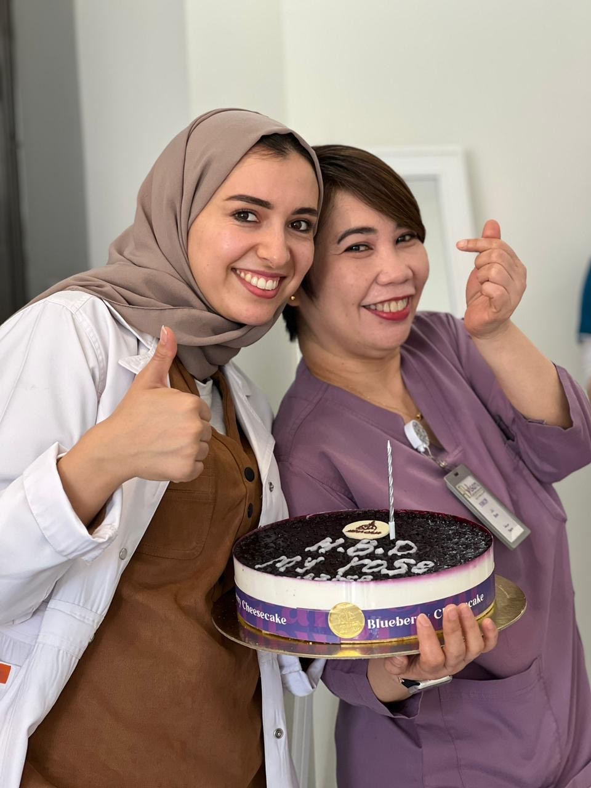
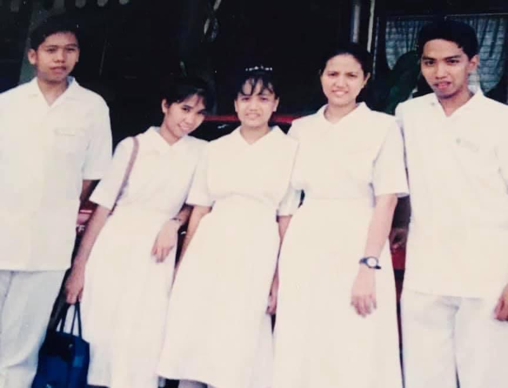
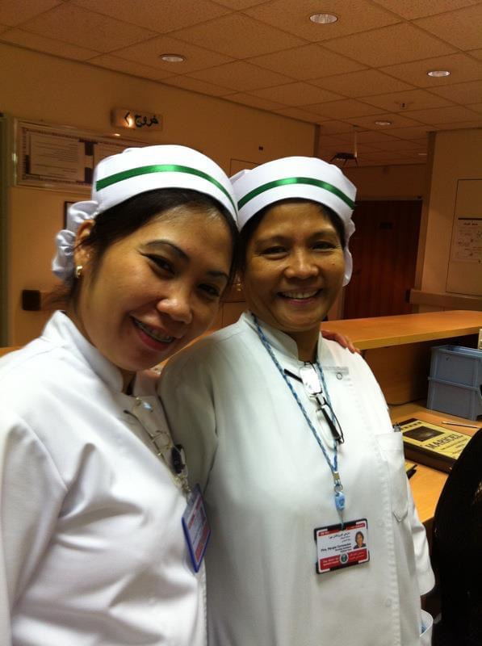

ROSALYND "ROSE" DELA CALZADA
The woman who inspires me every day
Here's a Timeline of Rose's Life:

Graduation

At King Khaled Eye Specialist Hospital

2023
- 1973 - Born in Sta. Mesa, Manila
- 1988 - Lost father due to lung cancer
- 1991 - Started to go to college in La Union. She wanted to take up Fine Arts but ended up taking a course in Nursing as what her mother wanted.
- 1995 - Finished baccalaureate studies in Nursing. On the same year she took the local board examination for nursing, got the title of Registered Nurse, and started working in a General Hospital.
- 1997 - Started working as a Company Nurse as salary offer is much better.
- 1999 - Went to work abroad as a professional nurse.
- 2000 - Marries husband for 23 years, Marcelo Dela Calzada, an autocad designer.
- 2001 - Gave birth to her first born, a baby girl who became her sweetest inspiration
- 2002 - Went back to work abroad and joined King Khaled Eye Specialist Hospital as Registered Nurse.
- 2003 - Started attending seminars/trainings/symposiums sponsored by the hospital.
- 2005 - Became an instructor/educator of Basic Life Support by the American Heart Association. Competencies monitor for employees of assigned ward.
- 2007 - Promoted at work as a Registered Nurse 1 and a relieving Charge Nurse.
- 2013 - Decided to end work contract to finally go back home to have her second born, a baby boy this time to complete the family.
- 2017 - Decided to go back abroad to work for the family and for her passion. Became the Head Nurse of their department.
- 2020 - COVID Strikes. She became a front-liner. It was not an easy job, but rewarding.

Student Nursing Days

2007
"Although I was left under the care of my grandmother and aunt when I was one year old, I never felt that she was thousands and thousands of miles away from me. My mom made sure that she is always involved in my life—distance and timezone won't hold her back."
-- Loui🌹